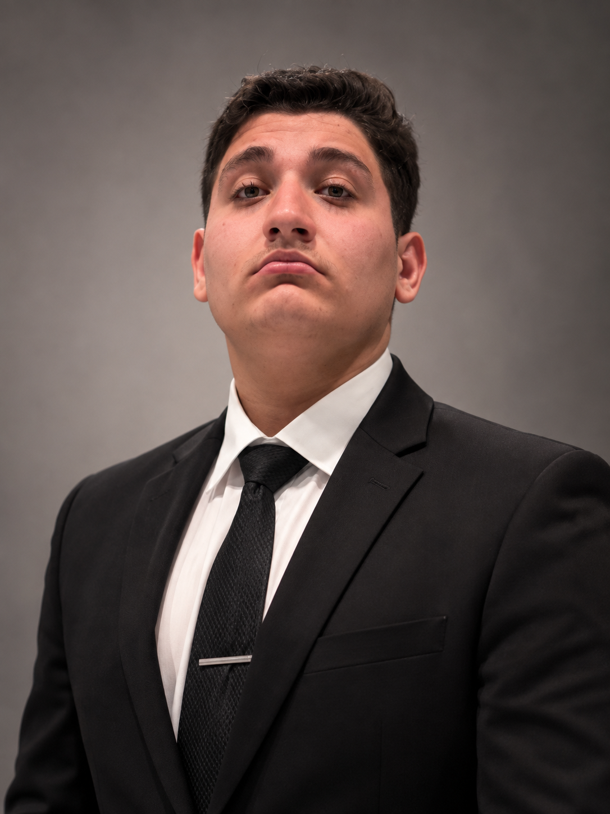

01 / RESISTANCE
Rejection, then a lower high
I mark the higher-time-frame resistance, then watch for rejection and a lower high. A move below the recent low strengthens the bearish idea; a clean reclaim above resistance challenges it.
El Cajon, California
I’m building my path in business and finance while working in retail and studying the markets. Trading has become one of the ways I challenge myself to think clearly and stay disciplined.

01 / About
I’m Stewart, based in El Cajon, California. I study Business Administration with an emphasis on economics and finance while working in retail. I’m interested in how people make decisions under pressure, whether that’s on a busy sales floor, inside a business, or in the markets.
Working and studying at the same time has taught me to be resourceful with my time. Retail has taught me to listen, communicate clearly, adapt when the plan changes, and take responsibility for the work in front of me. Those lessons follow me into everything else I do.
I want to keep growing into bigger responsibilities and eventually build something of my own. Right now, that means learning through experience, being honest about what I can improve, and putting the work in consistently.
02 / What I do
I’m building a foundation in economics, finance, and how businesses make decisions.
Working with customers and teammates has sharpened how I communicate, solve problems, and stay accountable.
I focus on price action, market structure, supply and demand, and managing risk before taking a position.
03 / Trading
TradesByStew is my personal brand for the work I do around futures, options, and price action. I look for context first: the broader trend, key supply and demand areas, and the structure price is making as it approaches them.
I move from higher time frames to lower ones to form an idea, then look for a clear reason to act. An attractive chart is not enough on its own; I want a plan for where the idea is wrong and what I’ll review afterward.
How I work through a setup
Discipline.
Patience.
Execution.
04 / Market studies
Three examples of the patterns I study and the questions I ask before making a trading decision.
I mark the higher-time-frame resistance, then watch for rejection and a lower high. A move below the recent low strengthens the bearish idea; a clean reclaim above resistance challenges it.
When price returns to a demand area, I look for a response and a higher low before considering a bullish setup. If the area fails, the original idea no longer has the same support.
When price is stuck in a range, I avoid forcing an entry in the middle. I’d rather wait for a clear break and retest, then ask whether the new level holds and where the idea would be wrong.
Illustrative diagrams of my thought process. These are not live charts or records of executed trades.